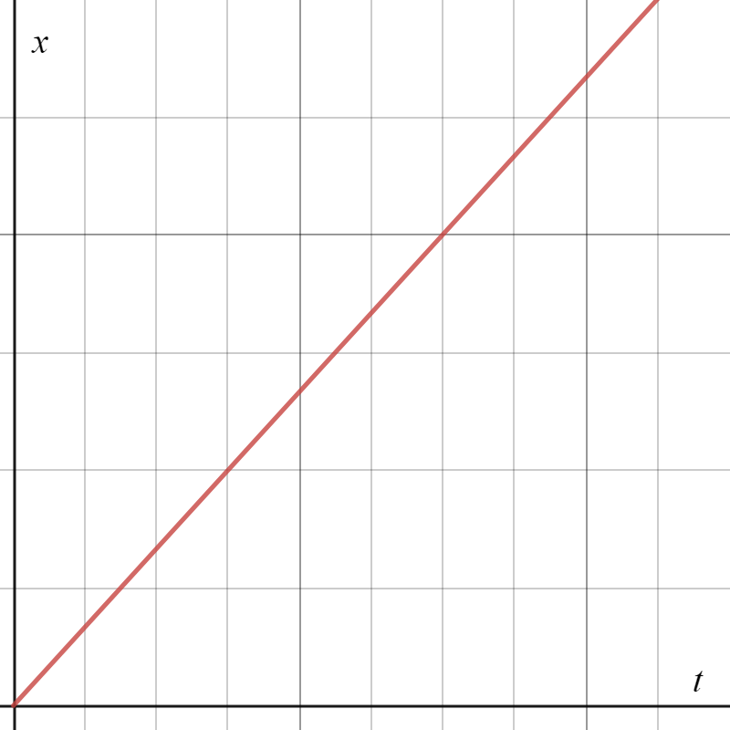
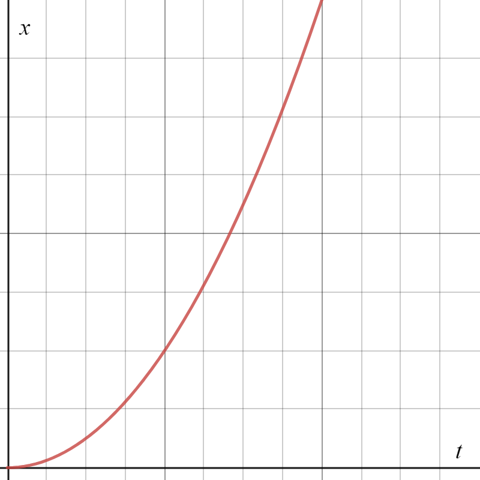

Physics
Kinematics
Vocabulary
Distance is a scalar magnitude of the movement from one position to another
Displacement is a vector that measures the independent magnitude and direction of a movement from one
position to another [ does not care about the path taken ]
Position is the displacement vector given as rectangular coordinates
Instantaneous Speed is the scalar rate of change in distance at some specific point in time
Average Speed, is the total distance divided by the total time (ignores direction)
Velocity is displacement over change in time; points in the same direction as the displacement vector
Acceleration is change in velocity over change in time
One-Directional Motion
Understand the following kinematic equations:
1. vf = v0 + at
final velocity is equal to the sum of the initial velocity and acceleration times time
2. Δx = ½(vf + v0)×t
displacement is equal to the average velocity (initial plus final over two) times time
3. Δx = v0t + ½at²
displacement is equal to the sum of the initial velocity times time and half the acceleration times time squared
4. Δx = vf t − ½at²
displacement is equal to the difference between the final velocity times time and half the acceleration times time squared
5. vf ² − v0² = 2aΔx
the difference beween the final velocity squared and the initial velocity squared
is equal to double the acceleration times the displacement
1D Conceptualization


In the above images, we have graphed the displacement of an object over time.
The slope of each graph is Δx⁄t
... wait, isn't the second kinematic
Δx = ½(vf + v0)×t?
Wouldn't that mean
Δx⁄t = ½(vf + v0)?
Yes, the slope of the position-time graph is in fact the average velocity of the object. A single point on the line represents the
instantaneous velocity at that point in time.
The difference between these two graphs is their derivatives (velocity-time) and what that means for the object.
Say the first position-time graph has been defined as x = ⅔×t.
The velocity-time graph of this object would be defined as the derivative (see Calculus)
of the position-time function:
dx⁄dt = v = ⅔.
There is no t variable in this equation, so the
velocity is not dependent on the time; thus the velocity is constant and does not change
( v0 = vf ).
If the second position-time graph is defined as x = ¼×t²,
then dx⁄dt = v = ½×t.
Since the velocity function does contain t, the velocity is dependent on the time and thus is changing (at a constant rate).
This same trick can be applied to all of the "-time" functions.
Forces and Dynamics
Here's my AP exam review video: